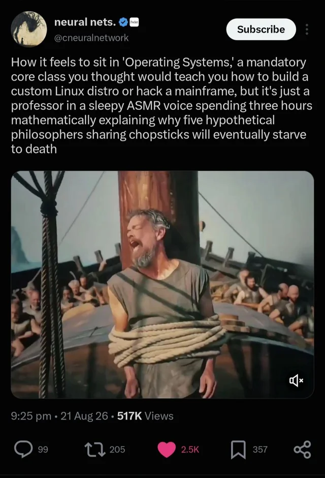
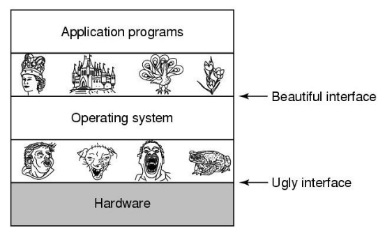

Introduction to Operating Systems
DRAFT
This slide deck is still under active development. Expect changes before it is finalized.
Class Overview
What are Operating Systems
Systems is how we think about how multiple programs work together
This course focuses on those that run on a single machine, but is applicable in many different places!
Course Learning Outcomes
- By the end of this class I want you to know how to reason about trade-offs made in system design
- You should be able to think about the pros and cons made in different kinds of systems:
- Process Management
- Memory Management
- Concurrency and Parallelism
- I/O and Hardware Interactions
- Programming Language Design
- Security for OSes
- As well as being conversant in the C programming language

Teaching Staff
Me (Dr. Sam Ogden)
- BS (Math&EE), Univ. of Vermont
- MS (CS), Univ. of Vermont
- PhD (Comp. Sci.), WPI
- Product Engineer @ IBM/GF (5 years)
- Grad Student @ WPI (5 years)
- Professor @ CSUMB (since 2022)
- Rock climbing
- Running
- Reading
- Getting lost (“exploring”)
- Ice cream
- Good bread
- Nerdy questions
- Office hours:
- Tuesdays 10-11am
- Wednesdays 1-2pm
- By Appointment
Course TAs
Asking Questions
I love getting asked questions
During class please raise your hand and I’ll get to you as soon as I can
If you’re confused then chances are that you’re not the only one
Questions: Nerd Sniping

Cat Tax


Course Information
Textbook: OSTEP
Operating Systems: Three Easy Pieces
- aka OSTEP
- Great book (with one caveat)
- Pretty readable for a textbook
- Completely free!
Course Schedule (might change a bit!)
Class Structure
The goal is for most days to have a lecture, a break and a lab:
- lecture (50 minutes)
- break (10 minutes)
- lecture (35 minutes)
- lab (15 minutes)
(but if you’ve ever had a class with me you know this is only a goal)
Course Policies
Grading
| Assignment Kind | Value |
|---|---|
| Homework | 40% |
| Exams | 40% |
| Participation | 20% |
You must get a 60% overall, and 40% in each subset of these in order to pass
Attendance
Attendance is expected and enforced through quizzes
Use of LLMs (1)
My personal thoughts on LLMs can be summarized as:
- LLMs are very useful tools for accelerating our work.
- LLMs are fantastic at making “interactive data”
- LLMs can be incredibly stupid. (And see the first bullet…)
One of the things are is most valuable about us is our ability to problem solve.
But we have to learn how and keep practicing it
Use of LLMs (2)
How I expect you to use LLMs in this class:
- Debug computer problems
- Better understand the material
- Quick iteration
- Checking your approach and assumptions
How I expect you to not use LLMs in this class:
- Abdicating decisions and/or thinking
- Taking the class for you
- Copy-and-paste
The point of you being in this class is to understand the topic, right?
What gets you a job is the ability to think and put pieces together.
If I ask you to explain your code or analysis, you should be able to do so.
Assignment Details
Programming Assignments
OS is not a programming class – it’s a concept class
PAs are meant to give context to what we are learning
- Assignments are in the github repository
- You should only change
student_code.candstudent_code.h- All other files submitted are discarded
- 6-7 assignments throughout the class
- each assignment is 2 weeks long
- They are in the C programming language
- C is meant to be very simple – often confusingly so
- Very similar to Java and C++
- Drawing out memory contents can often help a lot!
Programming Assignment: Critical Info
- The most important thing to do is to make sure your code compiles
- The starter code will compile
- If your code doesn’t compile then you can’t get any points at all
- The autograder runs 2x a day (at noon and midnight)
- It will determine your grade, or tell you if something went wrong
Exams (30%)
- 4 equally weighted exams
- closed book, but 1 handwritten page of notes
- Material builds, so effectively culumulative
- Practice Quizzes will be provided beforehand
Participation (20%)
- Class Attendance (10%):
- many classes start with attendance quizzes
- reading is linked on weekly schedule
- More likely to have quizzes when class looks empty
- Weekly Study Notes (5%)
- Intended to help you write yourself a study guide for exams
- Reflect on the topics covered this week
- what you learned this week
- what you struggled with
- Graded largely on completion
- The guidelines are meant as an algorithm – you can use whatever format you find most helpful to study from
- Lab activities (5%):
- due Sunday night after in-class introduction
Weekly Study Notes: help your future self
These study notes are for you to go back and use as a basis for studying
How to approach these notes:
- identify the topics that were covered
- explain ideas in your own words
- identifying least-understood topics
- noting “aha” moments
- explaining the nature of the confusion
- asking questions
- wondering about ideas, connections, applications
- deeper reflection
Homework
How to get help
TA Office Hours!

How to get help: what’s okay
- Asking your instructor!
- Seriously, come by office hours
- Asking your TAs!
- They’ve taken the class and are nice!
- Asking LLMs for clarification or guidance!
- “What does limited direct execution mean?”
- “Can you make me some practice problems for process scheduling?”
But don’t trust LLMs entirely!
How to get help: what’s not okay
- Getting
[fill in the blank]to write code for you- Friends
- Enemies (for numerous reasons this is a bad idea)
- LLMs
- The goal is to understand the problems and learn how to approach them!
- Any code you turn in you are responsible for!
Dealing with Challenges in Class
Take a breath
Mental Health
- Mental health is super important
- If you’re feeling stressed or anxious about an assignment then take a break on it for a bit!
- (This is the real reason I want you to look at assignments early — so you have time to walk away for a bit)
- If you’re feeling stuck then ask me or the TAs!
How to solve hard problems
Give yourself time to solve problems
College has a lot going on, but starting early gives you time to step back
Sometimes we run into impossible problems and need to start over
Things to do
- Go for a walk without devices
- Go to the gym
- Stare at a wall
- (boredom is your friend)
- Read a book for fun
Things to not do
- Screens.
- (I really could stop there)
- Use your brain to focus heavily
Give yourself time and space to let your mind wander and make random connections
A quick note back to LLMs
This is one of the big traps with LLMs – they force you into doing rather than thinking.
- I’ve seen this myself and know a lot of pros are running into it, too
This causes burnout and poor learning
Some things to remember
- Focus on growth and mastery
- Start homework early
- Drop by my office to chat
- Please call me just Sam (or Dr./Prof. Ogden)
Operating Systems
What’s an Operating System?

Tanenbaum
OS is a “systems” course
- In a CS systems course, we think about:
- physical resources shared by multiple people or applications
- What are the resources of a computer system?
- CPU
- Disk
- Memory (RAM)
- I/O
OS is a “systems” course
- How is this different from other programming classes?
- We need to consider how programs interact
- We our porgram is no longer running in isolation
- In fact, we know it isn’t!
- We have concrete limits to resources!
The Core Ideas of OS
Problem Statement
Core Question:
How to provide resources to users in an easy-to-use, reliable, fair, efficient, and secure way?
- Operating Systems is an amazing subject because this problem is everywhere:
- restaurants
- gyms
- colleges
- roads
- …
Solution Approach for Systems
The approach for systems problems:
- Begin with the minimal solution that solves the problem
- Identify bottlenecks and add complexity only where necessary
- Repeat step 2 until requirements are satisfied
The Core Idea of Systems (and OS)
Operating systems are designed to work and to be simple.
The most important thing to remember is we want to find the simplest solution that works well enough
An [imperfect] Example: cake
- Resource: A cake
- For now, let’s assume it’s a round cake
- Users: 7 users total
- Challenge:
- How do we divide up the cake?
Core ideas of OS
- Our discussions often have two parts
- Mechanism: What low-level support is needed to make this happen
- e.g. a knife for the cake example
- Policy: How do we use the mechanism to achieve particular goals?
- e.g. ensure everybody has an equal sized piece of cake
- Mechanism: What low-level support is needed to make this happen
Example: Processor as a shared resource
- Virtual resource: each app thinks it has its own CPU
- Questions
- Which app should get to use the physical CPU?
- If OS lets an app have the CPU, how does it get control back?
Example Guiding questions
- What are the virtual resources or services offered to users? Are they easy to use?
- How to ensure fair sharing of resources between users?
- How to protect users from each other, and protect the system from users?
- What workloads do we use to measure performance?
- What metrics do we use to measure performance?
- How efficiently are resources managed?
Recap
- Welcome to OS!
- Three main chunks of assignments
- Programming Assignments are graded 2x a day
- Take time with this class
- If you leave everything to Sunday night you’re gonna have a bad time
- When we approach problems, let’s think about how we can do thing simply
- And good enough is enough
CST334 - Introduction to Operating Systems